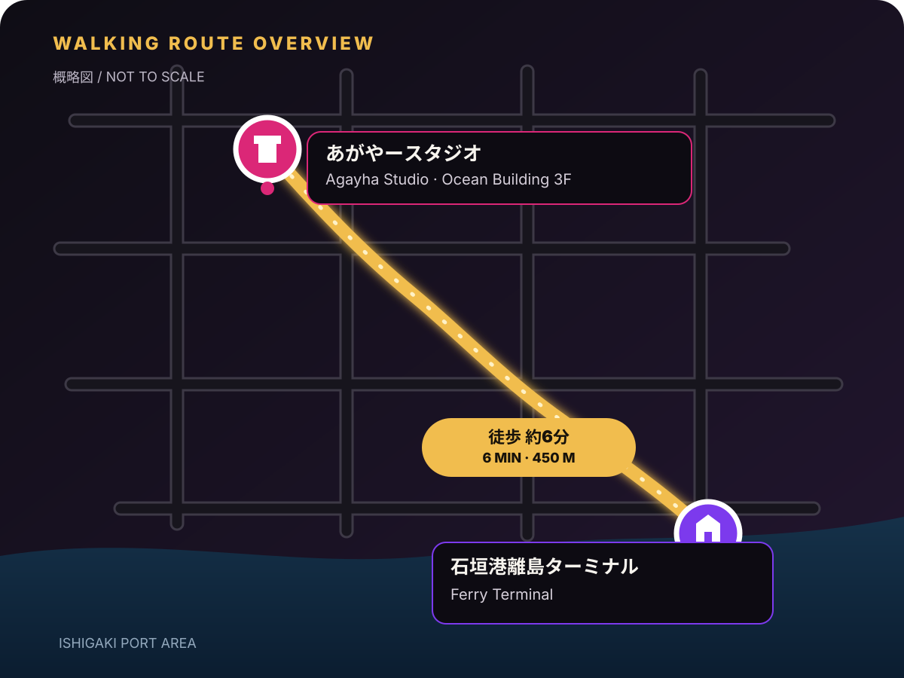
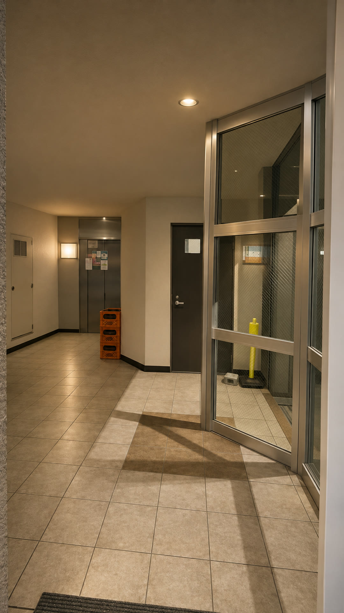
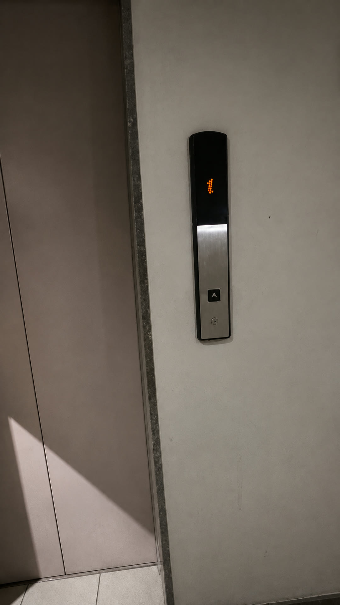
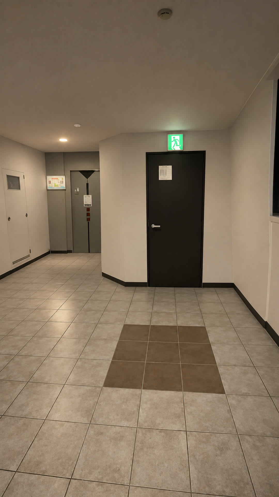

離島ターミナルから3階・3-Aまで
あがやースタジオは、石垣港離島ターミナルから徒歩約6分（約450m）。美崎町のオーシャンビル1階入口から入り、エレベーターで3階へお越しください。
From Ishigaki Ferry Terminal
徒歩約6分のルートを地図と動画で確認
Googleマップで表示される目安は約450m・徒歩6分です。概略図で位置関係を確認し、正確な現在地ナビはGoogleマップをご利用ください。
徒歩 約6分約450mほぼ平坦

黄色い線は位置関係を示す概略ルートです。実際の曲がり角はGoogleマップでご確認ください。
15秒で見る到着後の流れ
地図、オーシャンビル入口、エレベーター、3階の順に確認できます。

オーシャンビルの入口へ
美崎町11-11、オーシャンビルの1階入口から建物内へ入ります。

エレベーターホールへ
入口から建物内へ進み、エレベーターへ向かいます。

エレベーターで3階へ
エレベーターに乗り、3階を選びます。

3階で降りて3-Aへ
3階で降りたら、あがやースタジオのある3-Aへお進みください。